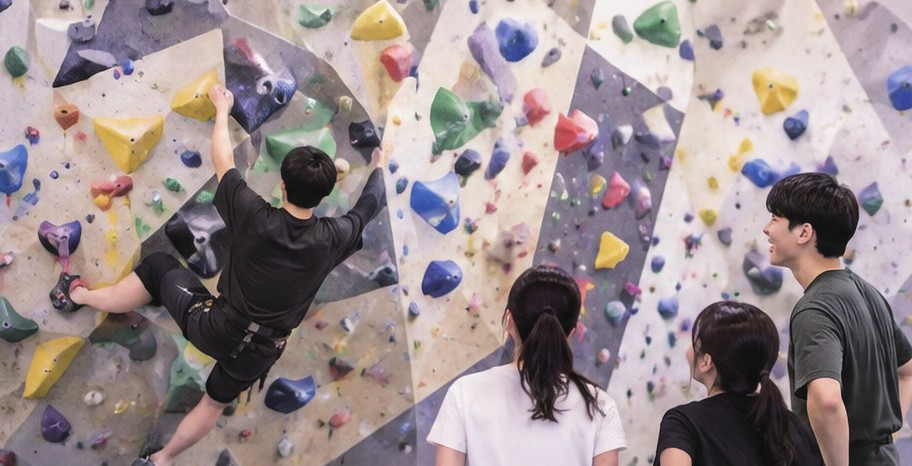
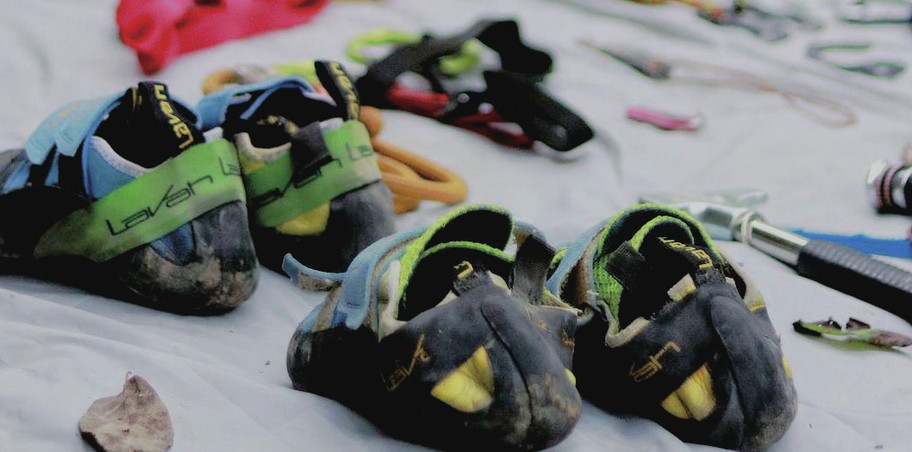
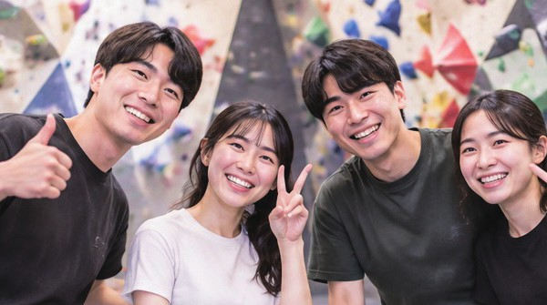
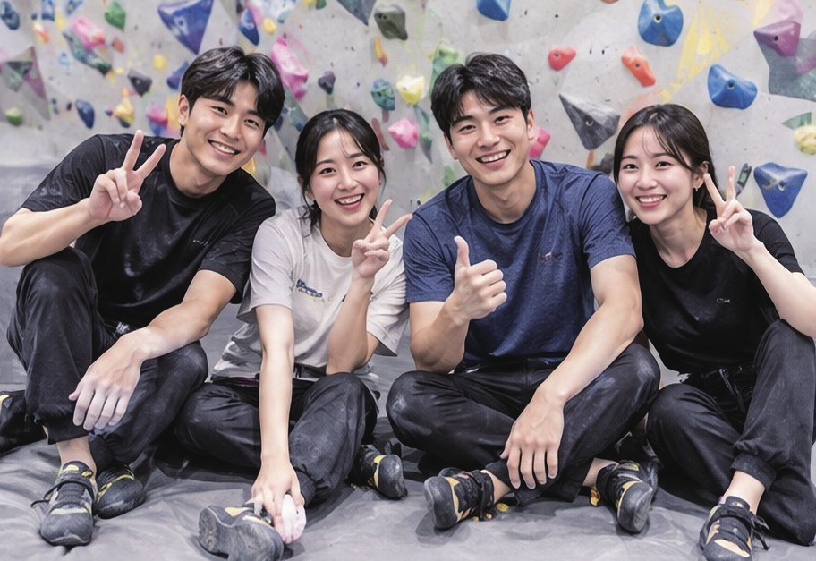
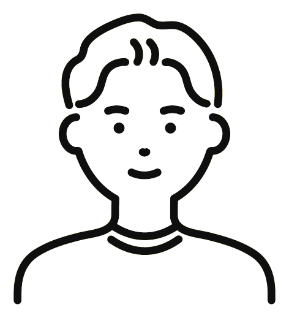
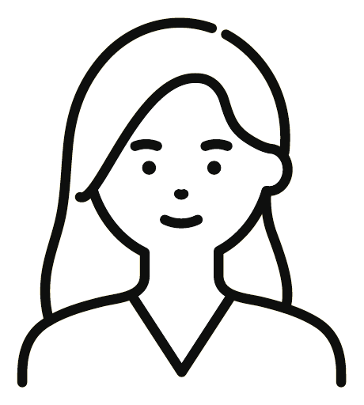
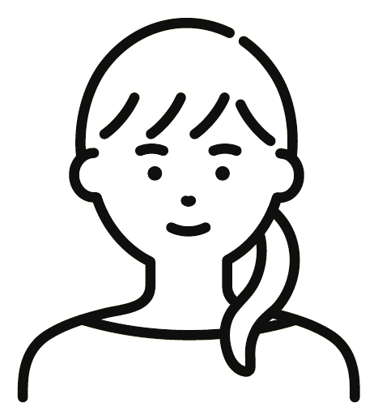
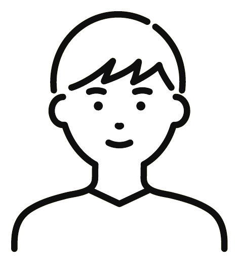
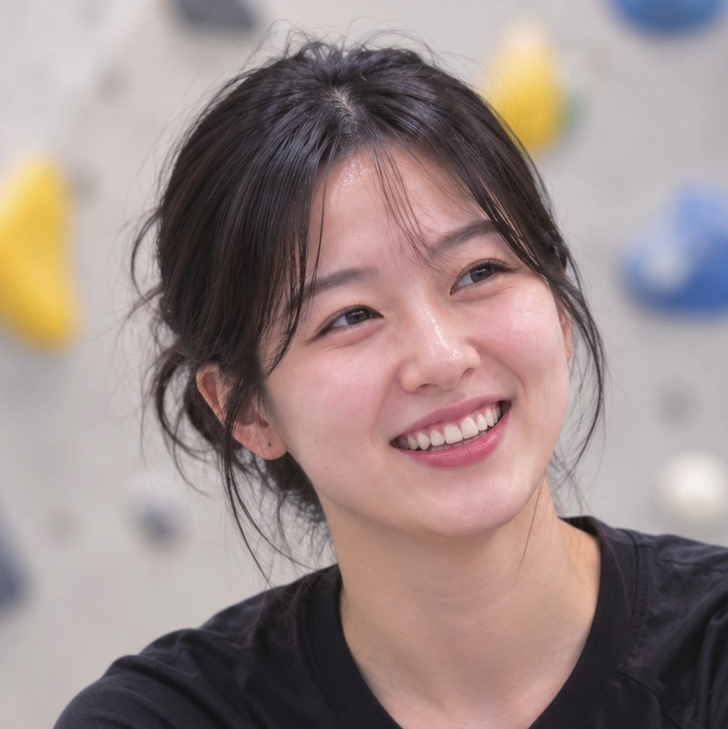
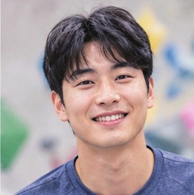

3줄 요약
- 새해를 맞아 인천본부 ICT운영부 직원 4명이 실내 클라이밍에 도전했다.
- 같은 코스라도 오르는 방법은 사람마다 달랐고, 먼저 성공한 동료의 경험과 벽 아래의 응원이 큰 힘이 됐다.
- 잘하지 못해도 일단 시작하고, 안 되면 방법을 바꿔 다시 해보는 것. 클라이밍이 알려준 도전의 방법이었다.
“저기까지 갈 수 있을까?” 새해를 맞아 인천본부 ICT운영부 직원 4명이 실내 클라이밍에 도전했다. 처음에는 어디서부터 시작해야 할지 막막했다. 서로의 움직임을 살피며 코스를 고민했고, “조금만 더!”라는 응원을 주고받으며 한 명씩 벽을 올랐다. 혼자였다면 망설였을 도전도 함께하니 한결 가벼웠다. 새로운 경험 속에서 동료의 새로운 모습도 발견한 시간이었다.

벽 앞에서 만난 새로운 도전
평소 사무실에서 마주하던 동료들과 함께 운동복으로 갈아입고 클라이밍장에 들어서니 조금은 낯선 분위기였다. 형형색색의 홀드가 가득한 벽을 보며 “생각보다 높다”, “저걸 어떻게 올라가지?”라는 이야기도 나왔다.
간단한 안전교육과 기본 동작을 익힌 뒤 본격적으로 코스에 도전했다. 클라이밍은 벽에 붙은 홀드를 순서대로 잡고 발을 옮기며 목표 지점까지 올라가는 운동이다. 같은 코스라도 체력과 신체 조건에 따라 느끼는 난이도가 달랐고, 각자 다른 방법으로 문제를 풀어가야 했다.
처음에는 손을 어디에 놓을지 몰라 몇 번씩 내려오기도 했다. 하지만 한 명이 먼저 성공한 코스를 보며 움직임을 따라 해보고, 아래에서 동료가 다음 홀드를 알려주면서 조금씩 감을 잡아갔다. 혼자였다면 지나쳤을 방법을 서로 알려주면서 조금씩 높은 곳까지 올라갔다.
서로의 방법을 보고, 함께 올라가다
특히 재미있었던 건 같은 코스라도 사람마다 올라가는 방법이 달랐다는 점이었다. 누군가는 과감하게 다음 홀드로 손을 뻗었고, 누군가는 천천히 몸의 균형을 잡으며 올라갔다. 평소 업무할 때는 볼 수 없었던 동료의 모습도 자연스럽게 드러났다. 조용히 관찰하던 사람이 의외로 과감하게 벽을 오르기도 했고, 한 번 시작하면 끝까지 해보려는 모습에 웃음이 나기도 했다.
벽 아래에서는 계속 응원이 이어졌다. “거기 잡으면 돼요!”, “조금만 더!”, “할 수 있어요!” 짧은 한마디였지만 막상 벽에 매달려 있으니 그 말이 꽤 큰 힘이 됐다. 누군가 마지막 홀드를 잡으면 올라간 사람보다 아래에 있던 사람들이 더 크게 기뻐했다. 그렇게 한 사람씩 자신의 코스를 완성해갔다.

한 번 더 도전하게 만드는 힘
클라이밍을 하면서 예상하지 못했던 즐거움도 있었다. 단순히 운동을 함께하는 것이 아니라 서로의 도전을 지켜보고 방법을 고민해주는 과정 자체가 하나의 팀 활동처럼 느껴졌다. 평소에는 각자의 자리에서 맡은 업무를 해냈다면, 이날만큼은 서로의 움직임을 살피고 자연스럽게 도움을 주고받았다.
몇 번의 실패 끝에 목표 지점에 도착했을 때는 생각보다 큰 성취감이 느껴졌다. 처음에는 ‘과연 올라갈 수 있을까’ 싶었던 벽이었지만, 한 번 더 시도하고 다른 방법을 찾아보니 결국 마지막 홀드까지 손이 닿았다.
잘하지 못해도 일단 시작하고, 안 되면 방법을 바꿔 다시 해보는 것. 어쩌면 클라이밍이 알려준 가장 간단한 도전의 방법이었다.
무엇보다 이번 체험은 함께 일하는 동료를 조금 다르게 바라보게 한 시간이었다. 업무에서는 미처 알지 못했던 모습도 발견했고, 서로 응원하며 웃는 사이 자연스럽게 거리도 가까워졌다. 새로운 경험을 함께한다는 것이 거창한 일이 아니어도 충분히 서로를 연결하는 시간이 될 수 있다는 것도 알게 됐다.

한계를 넘어서는 작은 도전

클라이밍은 단순히 높은 곳까지 올라가는 운동이 아니라, 눈앞의 어려움을 하나씩 해결해 나가는 과정이었다. 손이 닿지 않는 홀드 앞에서 잠시 멈춰 서기도 하고, 몸의 방향을 바꿔 새로운 방법을 시도하기도 했다.
매번 마음처럼 되지는 않았지만, 그럴수록 다음 동작을 고민하는 재미도 커졌다. 처음에는 엄두가 나지 않았던 코스를 끝까지 완성했을 때는 스스로에 대한 작은 자신감도 얻을 수 있었다. 익숙한 일상에서 벗어나 새로운 것에 도전해 본 이날의 경험은 앞으로의 또 다른 도전을 기대하게 만들었다. 이번 경험을 계기로 일상에서도 새로운 일에 주저하기보다 서로를 믿고 응원하며 한 걸음씩 나아갈 수 있기를 기대한다.
-

사실 시작하기 전에는 제가 잘할 수 있을까 싶어서 조금 망설였어요. 막상 해보니 잘 올라가는 것보다 새로운 동작을 하나씩 시도해 보는 과정 자체가 재미있더라고요.
-

동료들이 클라이밍하는 모습을 보는 것도 재미있었어요. 평소에는 차분한 동료가 벽 앞에서는 굉장히 과감해지기도 하고, 생각지도 못한 자세로 척척 올라가는 모습도 신기했습니다.
-

가장 기억에 남는 건 다 같이 한 사람의 도전을 응원하던 순간이에요. 벽에 매달려 있으면 생각보다 정신이 없는데, 아래에서 동료들이 알려주는 한마디 한마디가 정말 큰 도움이 됐습니다.
-

클라이밍이 이렇게 서로 응원하는 재미가 있는 운동인 줄 몰랐습니다. 다음에는 조금 더 높은 단계에도 도전해 보려고요.
Mini Interview
-
OOO 인천본부 ICT운영부 대리
처음에는 팔 힘만 있으면 올라갈 수 있을 줄 알았는데 생각보다 몸의 균형과 발의 위치가 중요했습니다. 잘되지 않는 구간을 몇 번씩 다시 시도하다가 결국 성공했을 때 성취감이 컸습니다. 혼자였다면 포기했을 순간에도 동료들이 옆에서 응원해줘서 끝까지 도전할 수 있었습니다.
-
OOO 인천본부 ICT운영부 대리
같은 코스라도 사람마다 올라가는 방법이 달라서 재미있었습니다. 동료가 하는 모습을 보면서 새로운 방법을 배우기도 하고, 제가 먼저 성공한 코스를 알려주기도 했습니다. 평소 업무할 때와는 다른 모습으로 서로를 볼 수 있어서 더욱 즐거운 시간이었습니다.
-

OOO 인천본부 ICT운영부 대리
몇 번을 시도해도 잘되지 않던 구간을 동료의 도움으로 결국 통과했을 때가 가장 기억에 남습니다. 혼자 하는 운동이라고 생각했는데 직접 해보니 서로 응원하고 방법을 알려주는 과정이 중요한 활동이었습니다. 다음에는 이번보다 조금 더 어려운 코스에 도전해보고 싶습니다.
-

OOO 인천본부 ICT운영부 대리
처음에는 잘할 수 있을지 걱정했지만 막상 시작하니 생각보다 재미있었습니다. 몇 번 실패하면서도 다른 방법을 찾아 다시 도전하다 보니 어느 순간 마지막 홀드까지 올라가 있었습니다. 새로운 일을 시작할 때 너무 걱정하기보다 일단 해보는 것도 좋겠다는 생각이 들었습니다.